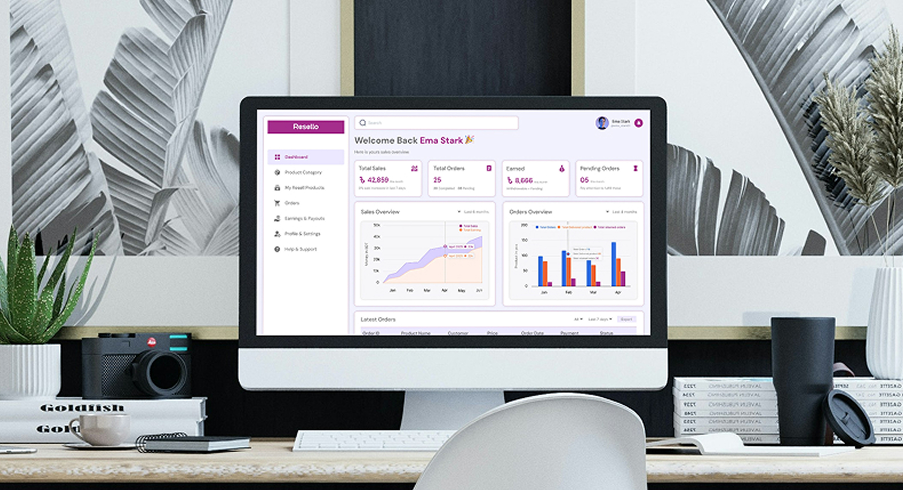
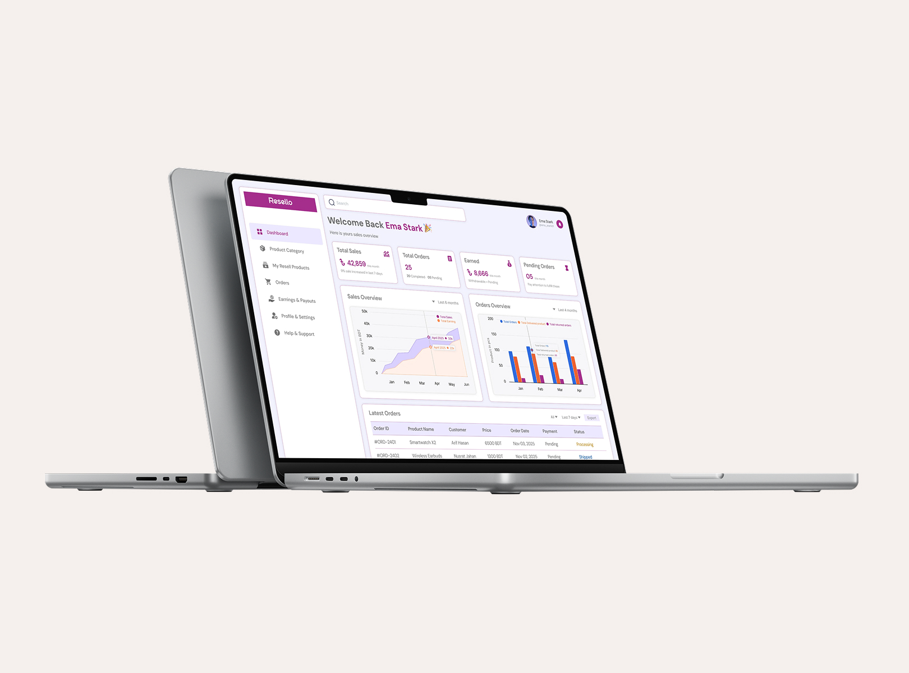
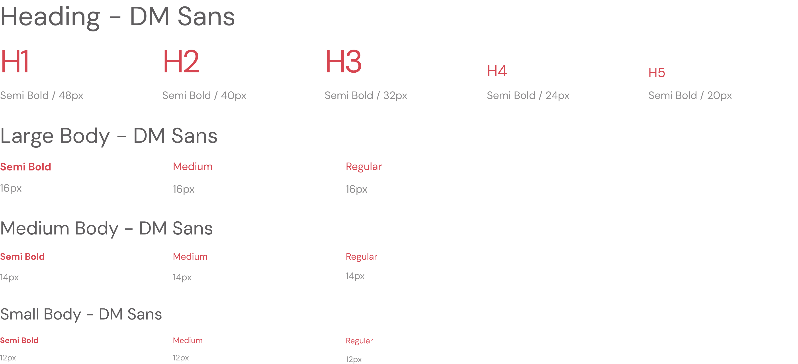
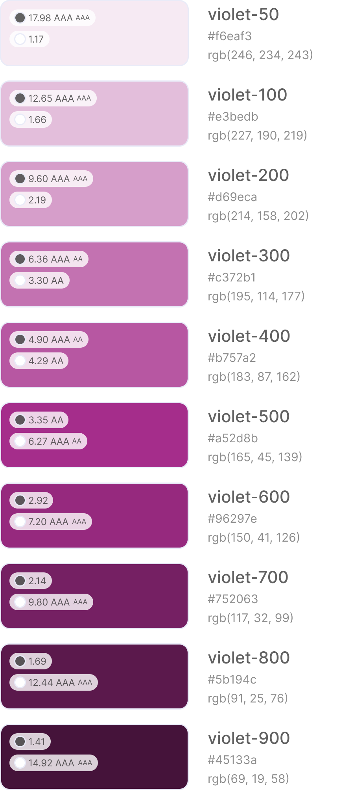
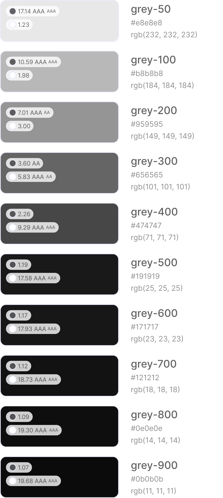
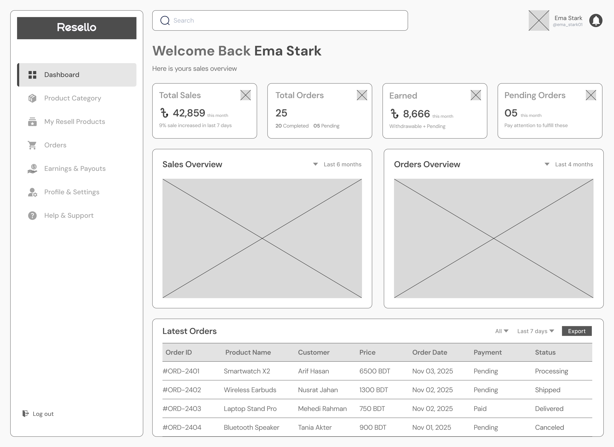
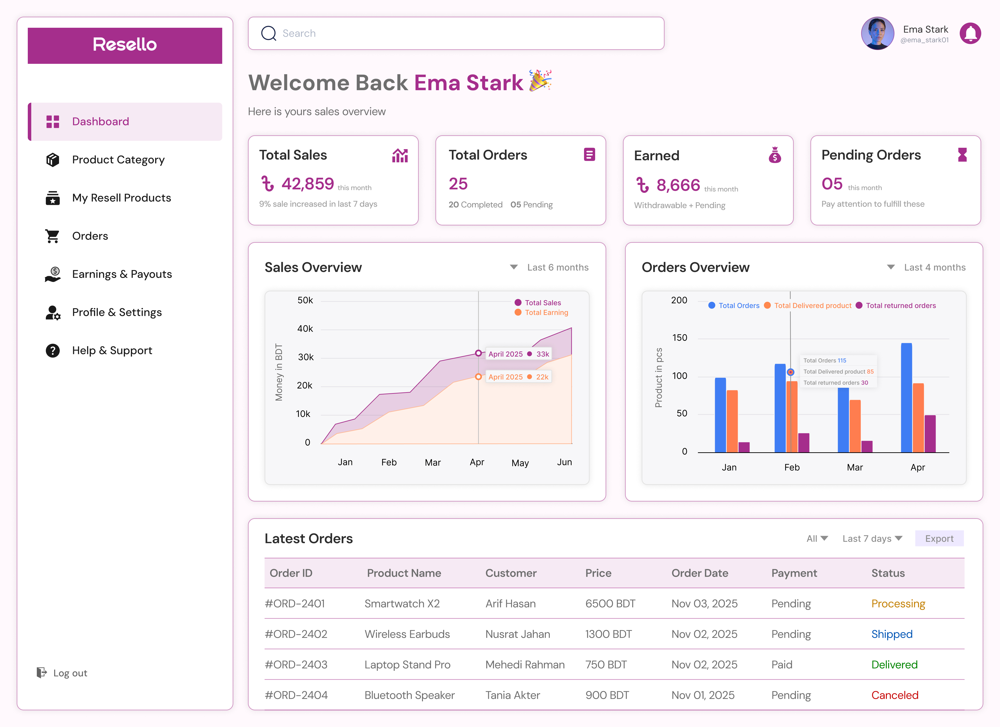

Resellers often juggle orders across chats, spreadsheets, and marketplaces, with no single place to see how their business is actually doing.
The challenge was to create an experience that could:
How might we help a reseller understand their business performance at a glance, and know exactly what needs their attention today?

A clean, data-forward dashboard that combines key business metrics, visual trends, and actionable order tracking in a single glance.
Key solution areas included:
Understand what resellers actually check first when opening their dashboard.
Map the information hierarchy from overview metrics down to individual orders.
Establish typography, color, and status-tag components for consistent data reading.
Define dashboard layout and content priority before applying visual styling.
Build a clear, data-dense interface that still feels calm and easy to scan.
Connect states and refine how metrics, charts, and orders work together.
The research focused on what independent resellers actually need to see the moment they log in.
Resellers want total sales, orders, earnings, and pending items visible the moment the dashboard loads, without clicking in.
A single total feels flat — seeing sales and orders as a trend over months helps resellers judge whether the business is actually growing.
Clear, color-coded order status cuts down on resellers manually chasing customers or suppliers to check where an order stands.
Since earnings directly affect income, resellers want withdrawable versus pending amounts clearly separated at all times.
Resello was compared against established seller and store dashboards to identify where it could stand out for independent resellers.
| Criteria | Daraz Seller Center | Shopify Admin | Spreadsheet Tracking | Resello |
|---|---|---|---|---|
| At-a-Glance Metrics | Yes | Yes | No | Yes |
| Visual Sales Trends | Mid | Yes | No | Yes |
| Order Status Tracking | Yes | Yes | No | Yes |
| Payout Clarity | Mid | Mid | No | Yes |
The user persona represents a typical Resello user: an independent reseller who needs to track her business performance quickly between other daily responsibilities.
Ema runs a small online resale business alongside her regular routine, sourcing products from suppliers and reselling them through social media and online marketplaces. She checks her dashboard multiple times a day to stay on top of orders and payouts.
The empathy map captures Ema's thoughts, words, behaviors, and emotions while checking in on her reselling business. It helps identify what influences her decisions and where the dashboard can better support her.
The typography system pairs a clean, geometric sans-serif for headings with a highly legible body type built for numbers — the heading type keeps the dashboard feeling modern and confident, while the body type keeps stats, tables, and labels easy to scan at speed.

The Resello color system uses a confident purple as the primary brand and action color, paired with a soft neutral grey background that keeps dense data comfortable to read for long dashboard sessions.


The wireframing stage established the dashboard's grid, content priority, and information hierarchy before applying the final visual style. It helped organize the stat cards, charts, and orders table into a layout that reads top to bottom, most important information first.

The final dashboard pulls everything together — a focused sidebar, clear stat cards, visual trends, and a scannable orders table. The section below walks through the actual designed screen.

A personalized greeting highlights four key stats — Total Sales, Total Orders, Earned, and Pending Orders. Sales and Orders charts reveal trends, while color-coded Latest Orders statuses show what needs attention. The sidebar keeps products, orders, earnings, and profile easily accessible.
Adding more charts didn't make the dashboard clearer — ordering information by what actually needs action first did.
Color-coded order statuses let resellers scan an entire table in seconds instead of reading every row individually.
A simple personalized greeting made a numbers-heavy dashboard feel like a tool built for one person, not generic enterprise software.
If RESELLO made you curious about how it was built, or you're working on something that could use a similar hand - I'd love to hear from you.